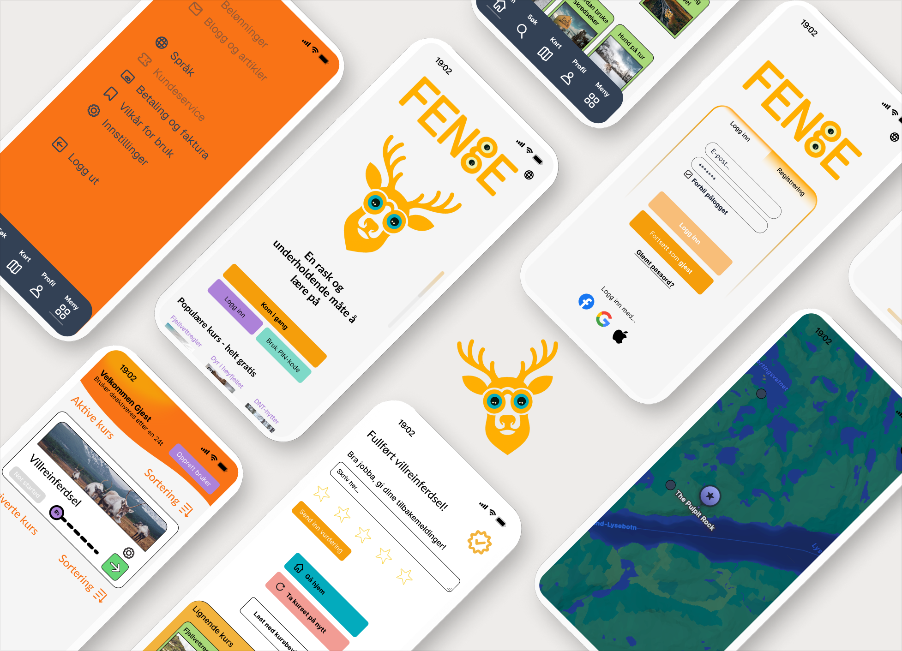
Digital læring som virkemiddel i naturforvaltning
Hvordan kan design gjøre tung fagkunnskap om villreinforvaltning tilgjengelig for frivillige, jegere og allmennheten — uten å miste presisjon og faglig tyngde?
Kontekst
Norsk villreinforvaltning representerer en kompleks balanse mellom økologiske hensyn, menneskelig aktivitet og politiske prioriteringer. Mesteparten av villreinhabitatene er i dag klassifisert som lav eller middels tilstand, og menneskelig påvirkning er identifisert som en primær årsak.
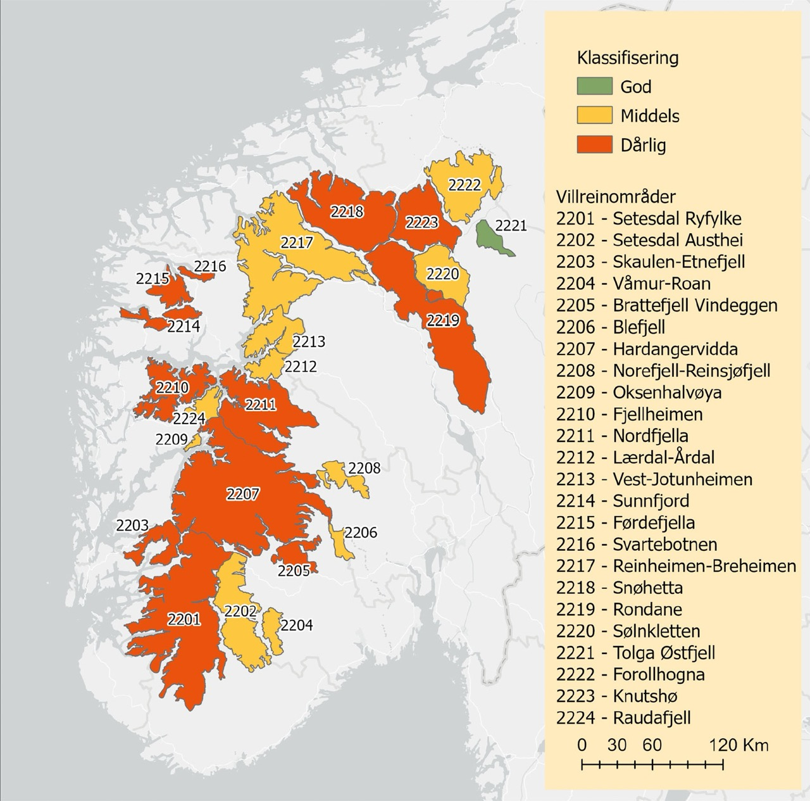
Problemstilling
Hvordan kan strategisk, brukersentrert design støtte digital læring som øker forståelse og motiverer ansvarlig atferd i villreinområder?
Fokus
Fremfor å evaluere økologiske konsekvenser utforsker dette prosjektet hvordan brukeropplevelse, læringsdesign og visuell kommunikasjon kan gjøre kompleks miljøkunnskap mer tilgjengelig, engasjerende og handlingsrettet.
Prosess
For å definere nærmere hvor hovedproblemet ligger, snakket jeg med 3 eksperter innen villreinforvaltning:
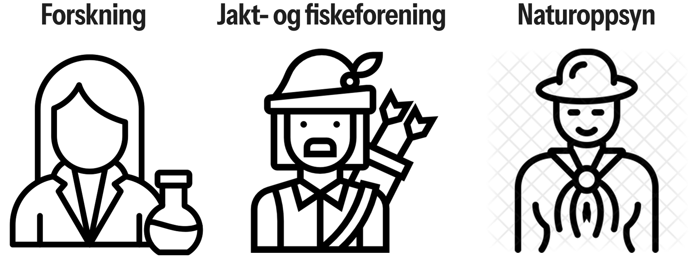
«Kanskje den fragmenterte informasjonen har vært et stort problem.» — Naturforvalter
Dette var et gjennomgående tema i alle intervjuene — alle pekte i ulike retninger, men kom til samme konklusjon:
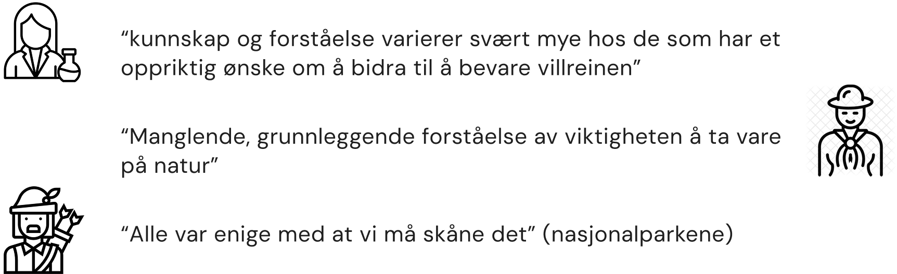
Ekspertene pekte alle på de samme løsningene, med klarere kommunikasjon som et viktig takeaway.
Mens vi undersøkte mulige fremtidsscenarioer, ble det gjennomført en spørreundersøkelse.
Konklusjonen var denne: Da deltakerne ble spurt om de små informasjonsbitene i undersøkelsen hjalp dem å ta bedre beslutninger, svarte de dette (1 = ikke i det hele tatt, 7 = i stor grad):
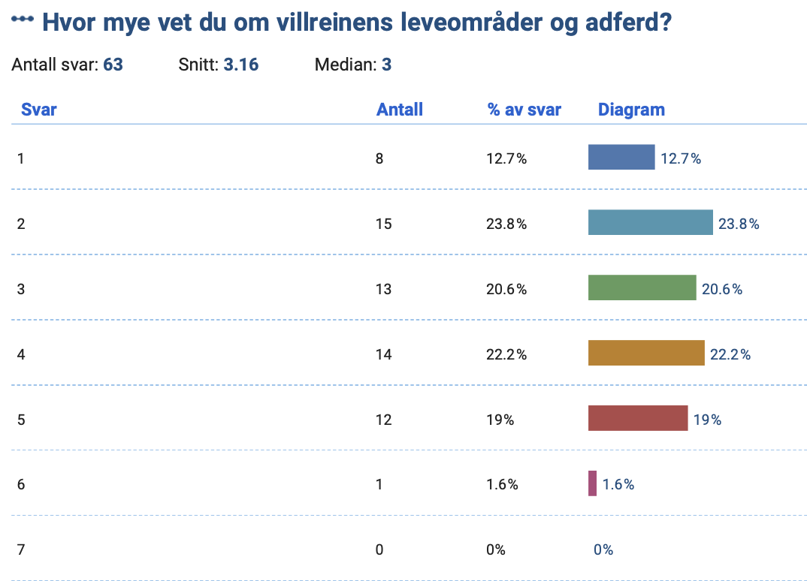
Deltakerne ble deretter spurt om hvor det var mest praktisk for dem å lære om denne komplekse informasjonen:
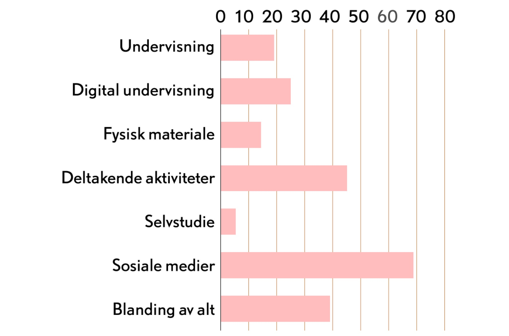
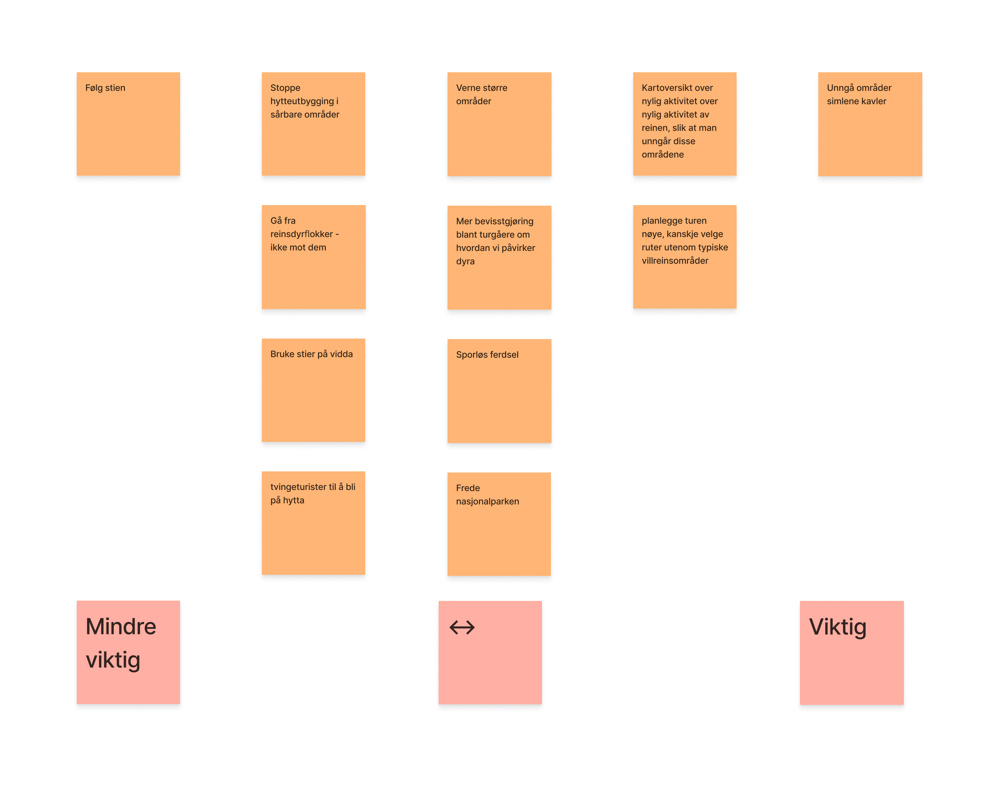
Konklusjonen var denne: en todelt løsning for testing
Det ble gjennomført flere workshops for å finne ut hvordan løsningen kunne realiseres:
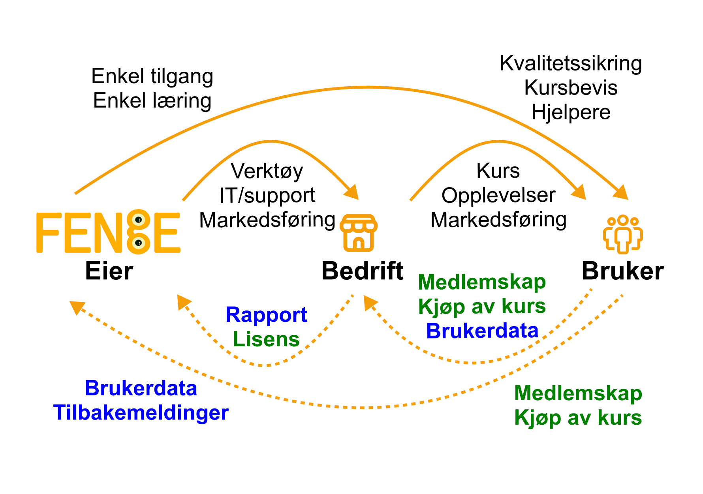
Det ble deretter gjennomført en workshop med Fenge for å opprette en forretningsstruktur for Fenge.
Det ble testet to løsninger. En holdningskampanje for å øke bevissthet rundt problematikken og en videreutvikling av verktøyet Fenge for å øke brukervennligheten i brukerreisen når en tar et kurs i relevante områder:
Holdningskampanje
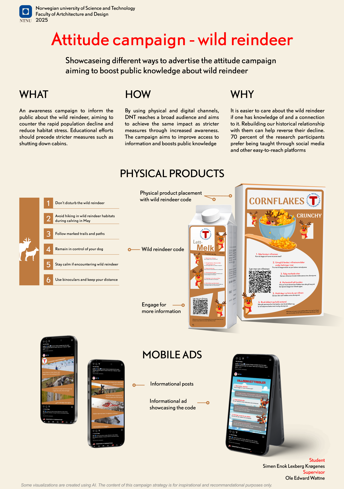
Resultatene var som følger:
Felles intensjon, fragmentert forståelse
Alle interessenter var enige om at villrein og nasjonalparker må beskyttes.
Eksperter kommuniserer kompleksitet
DNT og eksperter støtter seg på forskingstung, nyansert informasjon.
Brukere trenger kontekstuell klarhet, ikke mer informasjon
Turgåere og hyttebeboere spurte ikke etter mer data.
Effektiv for å øke bevissthet
Begrenset støtte for dypere læring
Avhengig av tilrettelegging
Behov for tydeligere tilbakemelding og læringsstruktur
Viktigheten av tydelig visuelt språk
Verdien av fleksibel, kontekstbevisst læring
Fenge
Resultatet er en høyoppløselig prototype av en digital læringsopplevelse i Fenge, designet for å støtte korte, kontekstuelle læringsøyeblikk fremfor lange kurs.
Finale prototyper
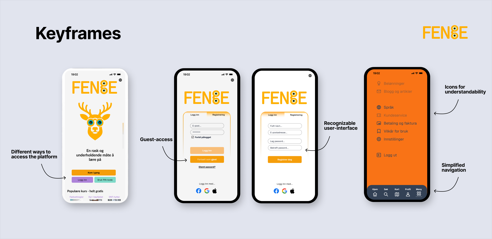
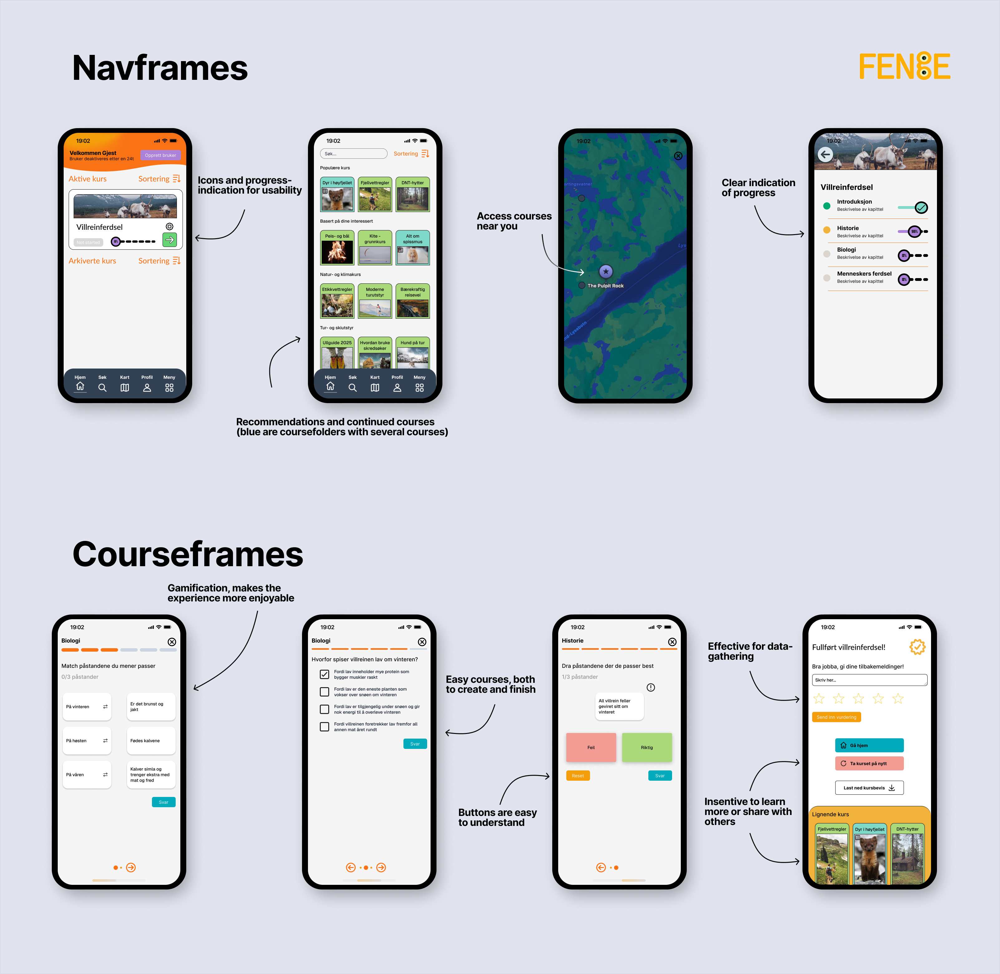
Etter å ha laget de endelige lo-fi-prototypene testet jeg plattformen på 4 brukere og holdningskampanjen under en visning av prosjektene der gjester fikk stille spørsmål.
Holdningskampanjen viste lovende resultater, og brukerne syntes det var positivt for å skape oppmerksomhet rundt problemet, men trengte mer teoretisk fundament. Det er her plattformen viste sin overlegenhet, og ble valgt som den endelige vinkelen for prosjektet.